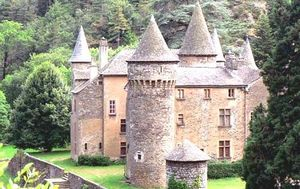
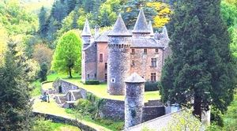
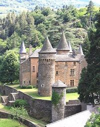
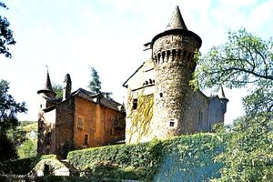

Recensement Jean-Claude Truffet




| Département | 48 — Lozère |
| Canton | Saint-Etienne de Valdonnez |
| Commune | Altier |
| Type d'édifice | Château |
| Période d'origine | XIII |
ALTIER, vestiges du Grand Altier on ne saura sans doute jamais qui a donné son nom à l'autre, du village d'Altier ou du ruisseau qui le baigne, CHAMP, propriété familiale, et fut toujours transmis aux héritiers les plus directs, le plus souvent par les femmes, et ce depuis son édification jusqu'à la fin du XVIIIe siècle. Le château figura depuis sa construction et pour trois générations dans la maison d'Altier (1308-1375), l'une des plus anciennes familles du Gévaudan. Elle s'est éteinte au XIVe siècle dans une branche de la famille de Borne, par le mariage en 1375, du damoiseau Armand de Borne avec Delphine d'Altier, fille unique de Raymond d'Altier. Il en résultera la création d'une nouvelle maison, les Borne d'Altier (1375-1828), solidement implantée au Champ pour une bonne douzaine de générations et porteront les titres de Comte d'Altier et de marquis du Champ . Il fut vendu en 1668 par les vicomtes de Polignac, successeurs des Randon, à la famille Borne d'Altier en 1796 toujours dans la famille. Après la Révolution, en 1812, le dernier descendant des Borne d'Altier mourut sans postérité après avoir racheté le Champ à sa tante, qui l'avait elle-même racheté à l'administration. La succession, (Charles Elisabeth Michel de Borne d'Altier, émigré à l'étranger en juin 1793), car il n'existait plus civilement, arriva donc au petit cousin Jules de Chapelain, sous-préfet de Marvejols. La famille Chapelain (1812-1905) a conservé la propriété du Champ tout au long du XIXe siècle. À la troisième génération des Chapelain, Joseph baron de Chapelain de Gras Saint-Sauveur marquis du Champ n'eut que trois filles: L'aînée, Elisabeth qui transmis le nom (1899), se maria à Alfred Gaspard comte de Gourcy-Récicourt, décéda, ses enfants seront déshérités du château au profit de sa petite sur, Marie Margueritte mariée à Maurice Raguenet de St-Albin et le Champ passa donc successivement aux Raguenet de Saint-Albin (1905) puis aux Gourcy-Récicourt qui le rachète suite à la faillite des précédents (1919). Le 29 septembre 1928, Joseph Varin d'Ainvelle qui avait épousé la comtesse Elizabeth de Gourcy-Récicourt racheta le château du Champ.
Altier, nef ancienne à berceau brisé, plein cintre. L'abside gothique fut reconstruite au XVIIe siècle. Portail roman s'ouvrant au sud. Cela n'empêchait point qu'il soit pillé pendant les guerres de Religion. Il n'en subsiste que les ruines, à 500 mètres au nord-est du village; En 1942, il sera inscrit à l'inventaire des monuments historiques. Champ, ce château du XIIe siècle. Les seigneurs d'Altier possédaient un château au lieu-dit "le Grand Altier". Ce n'est qu'au XIIIe siècle qu'un des fils cadet de la famille Altier fit construire une maison forte au lieu-dit "le Champ". Puis au XVe siècle et au XVIIe, de plan quadrangulaire formé par des logis disposés autour d'une cour, flanqués de tourelles circulaires, le château sera ensuite agrandi. Abandonné au XVIe siècle, ce n'est qu'à partir du XIXe siècle qu'il sera restauré. Il présente un aspect de type militaire avec des tours couronnées de mâchicoulis à toits superposés en poivrières.
Famille d'Armand de Borne d'Altier"
Château de Champ à Altier et vestiges du Grand Altier